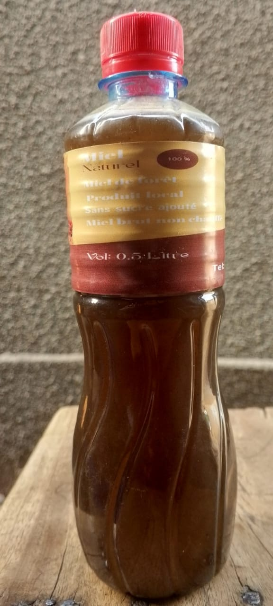
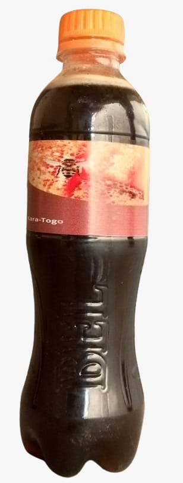

Notre vision est de devenir une marque reconnue dans le secteur du miel au niveau national et sous-régional. Nous proposons un miel pur accessible aux consommateurs, tout en contribuant au développement de l’apiculture locale.
Le miel d'Or provient des fleurs et des forêts de la région, récolté avec soin par des apiculteurs locaux engagés dans une agriculture biologique respectueuse de l'environnement.


Origine : Miel des fleurs et de forêt
Mode de production : Agriculture biologique
Pour toute commande ou information, contactez-nous :